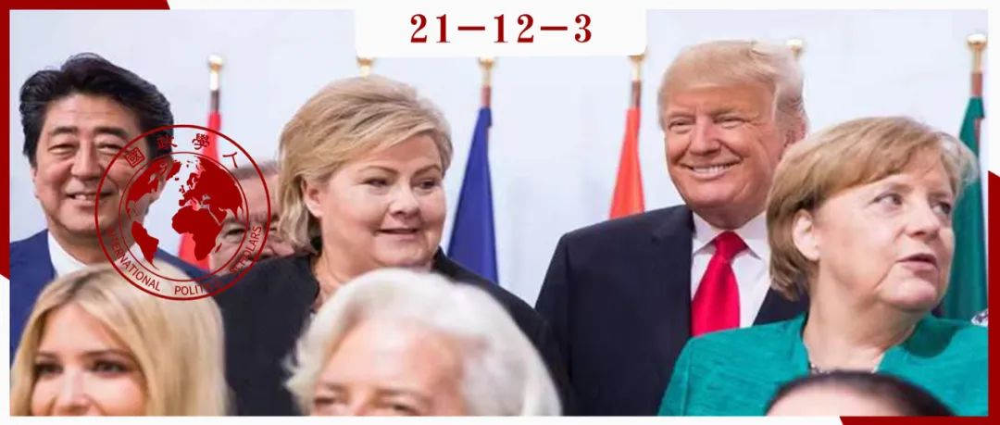

收录于合集 #《国际关系前沿》2021年第12期 22个

作品简介
作者： William C. Wohlforth，达特茅斯学院政府系丹尼尔·韦伯斯特教授；Benjamin de Carvalho，挪威国际事务研究所高级研究员；Halvard Leira，挪威国际事务研究所高级研究员；Iver B. Neumann，挪威国际事务研究所研究教授。
译者： 何伊楠（国政学人编译人员，中国政法大学国际政治专业硕士研究生）
来源： William C. Wohlforth,Benjamin de Carvalho et al. (2018). Moral authority and status in International Relations: Good states and the social dimension of status seeking. R eview of International Studies ,44 (3), 526-546, doi:10.1017/S0260210517000560.
归档： 《国际关系前沿》2021年第12期，总第39期。

内容摘要
本文主要关注中小国家地位政治的社会维度，为社会行为体广泛讨论的用以维持和提高其地位的策略打开新的窗口，并表明在某些条件下社会创造性、流动性和竞争策略都可以是体系支持的（system- supporting）。作者为地位研究中的其他棘手问题归纳了经验教训，特别是关于地位本身何时是一件商品、是否必须是一件位置性商品、以及各国如何衡量地位等问题。
文章导读
01
引言
当前关于地位政治的共识几乎全部基于对大国的研究。本文则将焦点置于中小国家，进一步探索了国际政治中地位的社会维度，从而减少一些困扰地位、声誉和寻求安全之间的复杂互动的问题。文章分四个部分：首先，分析“地位是社会性的”这一标准主张，并论证其对较小国家的关键影响；第二，利用这一视角，重新构建社会认同理论的标准应用。这涉及地位提升策略，强调国家通过被承认为“良好国家”来寻求维持地位或提升等级排名。这种对道德权威的追求作为一种获得地位的途径，可以反映在SIT（社会认同理论）确定的所有理想类型策略中；第三，将挪威作为主要案例；最后，概括对当前地位研究的其他影响。
02
地位是社会性的
国际政治中的地位（status）是指一国“在一个地位团体中的级别（standing）或排名（rank）”，这与“对某一国家在有价值属性上的排名的集体信念”有关。 根据乔纳森·伦逊（Jonathan Renshon）所言，地位的概念是位置性（positional）、知觉性（perceptual）和社会性（social）的。本文主要关注社会维度： 地位是国家之间的社会关系，它关乎这样一个社会事实，即在一个共同体中广泛持有但可塑的信念。 这个共同体由同辈或非同辈国家（peers or non- peers）组成，它们形成埃里克·林马尔（Erik Ringmar）所说的对于一个特定行为体地位声明的“承认圈”（circle of recognition）。这些更高阶的集体信念决定了行为体的地位。 地位的社会关系并不局限于冲突和危机情况： 地位因素不仅驱使国家发动战争，而且也可能引导国家在国际政治的日常生活以及与其他国家的社会交往。大国和中小国家都寻求地位，但要将其分开讨论。
地位的概念可用来指代寻求地位过程中浮现的行为体身份，以及行为体在等级体系中的定位。 就社会维度而言，行为体的身份（identities）是有等级的。 地位寻求（status seeking）是指为维持或提高自己的地位而采取的行动，因此是一种在与别国的竞争中完成的等级化活动（hierarchised activity） 。对于那些高度融入全球政治的小国来说，寻求国际地位离不开国内合法性竞争，一个国家在国家的等级体系中的位置也是它在全球政治地图上的位置。因此，地位寻求是国家身份政治的一个子范畴。身份政治核心在于承认，因此承认是地位的必要条件。虽然通常认为承认与施动者（agency）有关，而地位与结构有关，但本文拒绝这种静态的二分法。通过获得地位、给予或拒绝承认地位，结构不断地构成和重构。
地位是主体间性过程的结果，地位寻求是一种核心的国家活动。 地位也可能是高度工具性的：各国并不平等寻求彼此的地位，行为体会与在关键方面相似但地位更高的行为体进行比较，这在大国环境下意味着严格限制的同辈群体（peer group）。 小国因为数量众多，在地位比较方面更为复杂，可以分为 功能性（functional） 和 观念性（ideational） 两种类型的同辈群体：一个国家的功能性同辈群体往往由其邻国组成，区域集团因此可看作地位集团。观念性同辈群体包括被某一特定国家视为其直接竞争对手的国家。在这些较小的国家中，地位往往具有位置性，因为地位高低的值是与其他国家比较的函数（function），而不在于某些绝对或跨时间尺度上。
03
中小国家的地位寻求策略：道德权威与“良好国家”地位
1. SIT（社会认同理论）和国家战略选择
**
**
在确认地位寻求导致地缘政治竞争行为的条件时，许多文献基于 社会认同理论（social identity theory, SIT） 。学者们从中借鉴了三种提升国家地位的策略： （1）流动性（mobility） ——效仿地位较高一方的价值观和制度； （2）竞争（competition） ——在其位置所处维度上寻求匹配或超越更高的参照国家； （3）创造性（creativity） ——寻求将社会认可的赋予地位的维度转变为本国所擅长的维度。地位寻求是否会导致冲突或其他次优结果，取决于战略选择。 关于这些策略如何从社会心理学实验转化到国际政治领域，作者认为有两点最重要： （1）行为体是否会选择导致地缘政治竞争行为的地位寻求策略；（2）与中小国家直接联系的策略和手段仍待充分探索。大国可以通过言语或行动有力地影响关于小国地位的集体信念，而小国不同的社会环境和资源禀赋决定了与大国选择策略的不同。
中小国家的地位目标是双重的： 一方面，寻求在一个或多个具有相似地位国家的同辈群体中站稳脚跟；另一方面，寻求成为有用的盟友、公正的仲裁者或体系维护的贡献者，得到大国的承认。虽然从许多方面来说，获得国家身份的承认是地位最基本和最关键的部分，但一国只有以某种特定的身份与其他国家进行互动，这种地位才能得到承认。
正如大国俱乐部（例如超级大国或世界大国）内部还存在更小的俱乐部一样，在中小国家之间也存在着一系列不断变化的社会性构建的子序列（subrankings）。 中小国家之间的“门槛”在于中等国家会因一种或多种特定的品质被认可 ，例如荷兰是国际法提供者，瑞士专门扮演第三方角色，加拿大在大西洋彼岸进行调解等。
对于小国来说，跻身大国俱乐部不太可能，但跻身中等国家的地位或许可以实现。 首先，一个小国可能会选择流动性策略跻身中等国家行列。 这与小国之间或中等国家之间不断的地位竞争明显不同，它通常植根于对公认的中等国家做法的效仿，比如为维护国际秩序而承担更广泛的责任； 其次，竞争发生在与同辈群体相关的任何领域 ——从外国援助到战斗机数量、体育实力等； 最后，在中小国家中寻求地位的创造性策略意味着提出了一些可以衡量地位的新维度 ，比如对外援助占GDP的百分比。这种策略可以产生这样的主张：在国际政治中，真正重要的不是强权（might）而是公理（right），在此意义上，某些中小国家是“道德的”或“人道主义的”的超级大国。
小国不会通过寻求在物质上与大国相匹敌来寻求地位，但某种程度的效仿可以获得回报，中小国家之间相互竞争的一些因素也使它们在大国面前占有一席之地。 例如，作为联合国的主要捐助国，既可以在小国的同辈群体中获得竞争地位，也可以获得大国对其维护体系的认可。在这种背景下，创造性意味着定义对大国有用且有助于体系维护的方式，流动性（效仿精英集团的规范）则反映了一种与其他低地位国家竞争的策略。
2. 通过道德权威获得地位
**
**
从定义上讲，在传统叙事中被视为垄断了道德权威（moral authority）市场的大国获得资源的机会更大。如果排除存在永恒有效的行为准则的可能性，并将国家道德视为一种社会现象，那么 道德是在历史上由体系的领导国所制定的特定框架内判定的适当行为。 然而，由于作者认为地位至少取决于 传统意义上的权力和道德权威 两个变量， 地位也有可能被授予拥有更多的物质实力但缺乏道德权威的新兴国家，以及那些要么发展了物质实力，要么享有较高道德权威的现状导向型中小国家。
发展物质实力的策略与树立道德权威的策略并不互斥。 中小国家往往通过道德权威获得地位， 可以用三种不同的方式表现道德：（1）从传统中得到启发，利用抽象形式的准则（maxims），如欧洲人文主义。 对于一个小国来说，无论是在同辈集团内部还是与大国对比，这种形式上的道德行为有利于采取流动性、创造性和竞争策略，例如谴责大国将权力置于道德之上的伪善行为； （2）道德性地维护社会秩序。 例如对既定霸权秩序的支持，即所谓“体系维护”； （3）小国可能会发现，维持自身霸权的行为是合乎道德的，这种方法通常与流动性策略相联系。 这三种行动方式有时相吻合——比如挪威决定在朝鲜战争中派遣野战医院来支持美国是一件人道主义的事情，它支持了美国的霸权，美国也认为它有用；有时也有分歧——比如挪威决定通过投炸弹来支持对利比亚卡扎菲的军事干预，虽然违背人道主义，但联合国授权的理由却运用了人道主义措辞。
因此，作者认为， 一些小国在国际社会中共享主导大国的规范性结构，其目的是通过把道德行为置于优先地位，来谋求“被视作良好国家”的总体战略。 中小国家寻求的地位不是争夺大国地位，而是作为一个“良好国家”。这样参与的好处在于无数小国家中的一些国家能被看到，并能够与大国分享聚光灯，还能促使大国行为和言论的转变，进而改变关于地位的集体信念。一旦一个小国的作用被大国注意到，它的贡献必然得到公众认可。这种认可通常采取承认国家贡献的形式，无论该国规模大小。因此，人们很容易认为，一旦中小国家要求成为“良好国家”，它们作为同侪之首（primus inter pares）的地位就会得到承认和认可。
中小国家可以通过参与传统上是大国地位标志的领域——国际和平与安全——来进行地位竞争，但也要考虑资源的限制以及国内和国际规范的建议。 如果一个小国能够成功地促进国际和平与安全，即承担起一种本应由大国承担的责任，那么它的地位回报将成倍增加。
04
案例：在条件允许下“做好事”的挪威
本文以挪威为例来说明中小国家寻求“良好国家”地位的可能性和局限性。有三个影响挪威长期以来的“良好国家”策略的相关因素：国家认同和国内政治偏好、不断变化的国际环境以及运气。
1. 身份认同与国内政治
**
**
“人民”的自由主义概念是挪威政治话语中的关键结构，与19世纪下半叶的国际和平话语非常契合。作为挪威外交政策论述的起点，挪威知识分子和政策制定者的和平话语体现了与SIT中的创造性策略产生强烈共鸣的方法。前挪威外交部长哈尔夫丹·科特（Halvdan Koht）强调，国家规模小意味着一种不寻求权力、而是成为可靠的变革推动者的地位。尽管人们普遍认为权力赋予地位，但诗人和政治活动家比约恩斯彻纳·比昂松（Bjørnstjerne Bjørnson）认为，没有权力的事实赋予了一种特殊的地位，从某种意义上构成了一种世俗版的《新约》思想：对国家之间的相互作用进行道德上的重新评估，将使小国（或称事实上的良好国家）排在最前。
这并不是一种被动的转变，因为除了小国地位之外还有追求和平的地位。虽然挪威人不想参与权力政治游戏，但他们也有改变游戏规则的强烈愿望。这样会带来荣誉（honour），致使国家体系中的等级重新排序，从而提高挪威的地位。挪威所采用的和平话语是一种改变地位竞争术语的创造性策略，其道德行为主要与抽象的“善”（goodness）有关。
2. 国际体系环境
**
**
二战和随后的冷战导致挪威产生安全问题的同时也产生获得地位的新途径。挪威深入参与国际联盟和之后成立的联合国，从20世纪40年代末开始向联合国维和特派团提供部队。这不仅在抽象尺度上追求“善”，而且在体系维护方面遵循流动性和创造性策略。冷战后，挪威再度标榜“和平国家”，扬·埃格兰（Jan Egeland）提出的“参与政策”（policy of involvement）强调：由于全球利益的复杂网络，小国可以发挥“道德”作用，而大国（尤其是美国）则不能。过去三十年间，参与政策一直是挪威外交政策的基石之一，它也被解读为从1900年左右到吉米·卡特（Jimmy Carter）政府将人权问题提上国际议程的政策的延续。
挪威的和平行动与19世纪挪威的国内话语有着惊人的相似之处。而且和平行动再次被证明能够以较低的代价提供重要的地位利益：与和平参与相关的时间和金钱成本微不足道，但全球政策精英似乎很快就广泛承认挪威是一个以和平为导向的国家。即使在19世纪90年代，挪威国内的反响同样强烈：成为和平国家的想法深深触动挪威人的心弦。挪威能在这一时期取得中等国家地位，至少要部分归功于“参与政策”，这在很大程度上出于一个具体因素：因其对外政策基于抽象的善和体系维护，挪威被视为一个不完全出于自身利益采取行动、旨在造福整个国际社会的“良好国家”。
3. 运气和资源禀赋
**
**
1895年，“诺贝尔和平奖”的设立成为挪威“良好国家”策略的便利资产，并在挪威国内外都被视为其和平地位的标志。后冷战时期，尽管挪威在军事实力、人口和领土方面属于小国，但在“预期寿命”等显著指标上领先大多国家。作为世界上第三或第四富有的国家，挪威军费开支位列世界第27，这赋予其寻求“良好国家”地位的资本。
挪威之所以能相比其他国家取得这样的地位，原因不在于其绝对的国家财富。挪威愿意投资于显而易见的国际和平项目并保证得到美国认可，同时，它非常愿意将其可支配收入用于这些项目。
综上，案例表明： 对于能做到这一点的小国来说，以规模和军事资源为基础并承担超出其他国家预期的国际和平与安全责任，是获“良好国家”地位认可的一种方式。这种地位反过来又使这些国家有可能进入它们本来无法进入的领域。 地位竞争的结果取决于其他国家（尤其是大国）的认可。因此，为获得“良好国家”地位而竞争的每个中小国家都相互密切关注，试图在发展和人道主义援助方面比其他国家投入更多，并在多边环境下实施自己的“商标”政策或理念（‘trademarked’ policies or concept），这样做很大程度上是希望能够获得更高地位的回报。其目标不仅是成为一个“良好国家”，而且是成为“更好的国家”。
05
结论：对国际关系中地位的更广泛影响
作者将相关论点和论据整合在关于地位的更一般命题上。
1. 做好事之人（Do-gooder）的地位寻求
**
**
对某些中小国家来说，与大国的炫耀性消费或竞争相比，显著的行善主义（do- goodism）似乎在形成对地位的基本驱动力上发挥作用，而标准模型则假定这种驱动力会引发竞争或战争。那么，这就提出了一个问题，即 地位政治的两种表现——危险或昂贵的竞争与引人注目的行善主义（do-goodism）究竟有多相似？ 探索这一假设需要对作为地位寻求模式的竞争与合作、炫耀性消费与炫耀性行善主义进行仔细的二元研究。
2. 地位本身就是一个目标
**
**
研究地位的学者对于国家追求地位是否（或何时）脱离其他更切实的目标存在分歧。对获得、维持和提高这种独特地位的追求，很难降低为工具性地追求一个“谈判桌席位”或是对目标正当性的规范性信念。大量证据表明， 国家为提高地位付出的努力代价高昂、耗时耗力，而这只能部分地用更工具性的追求来解释。 通常看起来重要的不是利害攸关的内在问题，而是对国家地位的影响。
3. 可以避免位置性（positionality）吗?
**
**
关于地位的文献的另一个核心命题是：地位是一种位置商品，它的价值取决于社会比较。在这种观点中，高地位本身稀缺，因此地位竞争更易变为零和博弈。然而， 位置的（重要）程度是一个变量而非常数 ：当地位被定义为总体排名并涉及到首要地位时，它最明显；当这关系到一个相对大的群体的成员的地位时，它就会减弱到一定程度，类似于一个俱乐部而非位置商品。
有证据表明，虽然位置方面可以改善，但永远无法消除。 竞争不会完全消失，即使国家身份被定义为一个俱乐部成员，当其所有或大部分同辈也在俱乐部中时，成员身份就不再意味着地位。 因此，竞争“良好国家”地位的各国相互密切关注，都试图在发展和人道主义援助方面比别国投入更多，并在多边环境下实施“商标”政策或理念。这种“良性”竞争并不容易，例如，在某些领域拥有强大的竞争性资产组合的挪威无疑会阻止一些潜在竞争对手进入。
4. 衡量地位
**
**
在地位政治中， 尽管中小国家无法与地位较高的国家竞争，但仍可以将其作为有用的参考对象。定义和衡量地位至关重要，因为对行为体地位的不确定性或不满会导致冲突行为。 中小国家可以从国家间的等级体系中了解自己相较于大国的位置，其结果是产生一系列使行为体减少对其地位的不确定性、并拥有更多选择来纠正地位不满的机制，这反过来又引出了关于地位动机在国际关系中作用的微观基础的新问题。
译者评述
近几年，西方学界对地位政治的研究主要集中于“地位”在时政中的概念操作和定量与案例分析，[1]衡量地位的主要方法分为使用定量数据生成地位排名的衡量标准和使用定性方法确定政策制定者的身份动机两种。[2]本文主要运用定性方法，从社会学层面将地位界定为“在社会中广泛但可塑的信念”。追求地位的主要行为体是国家，其目的在于寻求国际体系中的身份认同，因此，这里地位寻求是身份政治的子范畴。由于本文主要关注中小国家，其获得地位的标志被界定为国际体系中的大国和同辈群体对其身份的认可或承认。
植根于社会认同理论中国家追求地位的策略：流动性、竞争和创造性，作者指出；中小国家或通过效仿地位高一级国家的做法来维护国际秩序、承担更多责任的流动性策略，或通过在衡量地位的新领域与同辈或非同辈群体竞争的创造性和竞争策略寻求地位。在这一过程中，寻求地位的载体是道德权威——一些小国在国际社会中共享主导大国的规范性结构，通过把道德行为置于优先地位来谋求“被视作良好国家”。结合挪威的案例，在国内身份认同、国际体系环境和运气资源禀赋三重因素下，建立“和平国家”的国内认同的挪威，通过“参与政策”维护自由国际秩序（流动性策略），并运用国家财富大量投资国际和平项目得到美国认可（创造性策略），在这一领域领先其他同等规模的国家（竞争策略），成功跻身中等国家行列。这表明：中小国家在其规模和军事资源基础上承担超出其他国家预期的国际和平与安全责任，是获得“良好国家”地位认可的一种方式，这还使其获得进入国际和平与安全等大国竞争的主要领域的可能。
在结论部分，作者指出，对中小国家地位的研究产生以下待解决的问题——（1）大国追求地位的昂贵竞争与中小国家追求地位的行善主义有何异同？（2）国家寻求地位的目的仅仅是工具性的吗？（3）地位是否只是国家间进行比较的位置商品？在此基础上，译者认为以下问题也值得进一步探究：（1）文章提到，中等国家与小国的“门槛”在于前者比后者拥有更明确的一个或多个特质（quality），例如，被视作中等国家的荷兰是国际法提供者，瑞士专门扮演第三方角色，而加拿大在大西洋彼岸发挥调解作用等。那么，中小国家与大国之间的“门槛”是什么？获得大国地位承认的具体衡量标准如何划分？（2）尽管本文认为地位并非总是社会比较中的位置商品，但也不否认国家间的地位竞争始终存在。同时作者还认为，地位寻求是身份政治的子范畴。那么，位置路径的地位同身份路径的地位的核心差异以及所对应的现实经验有何不同？这又涉及到地位研究长期存在的问题——国家寻求地位时身份认同与排名究竟哪个更重要？
词汇整理
地位 status
同辈群体 peer group
社会认同理论 social identity theory, SIT
道德权威 moral authority
责编 | 李宏洲 林怡娉 董黛
排版 | 贾希铭 方引弓
文章观点不代表本平台观点，本平台评译分享的文章均出于专业学习之用, 不以任何盈利为目的，内容主要呈现对原文的介绍，原文内容请通过各高校购买的数据库自行下载。

国政学人
支持学术公益与知识传播
微信扫一扫赞赏作者 __赞赏
已喜欢，对作者说句悄悄话
取消 __
发送给作者
发送
最多40字，当前共字
上一页 1/3 下一页
长按二维码向我转账
支持学术公益与知识传播
受苹果公司新规定影响，微信 iOS 版的赞赏功能被关闭，可通过二维码转账支持公众号。